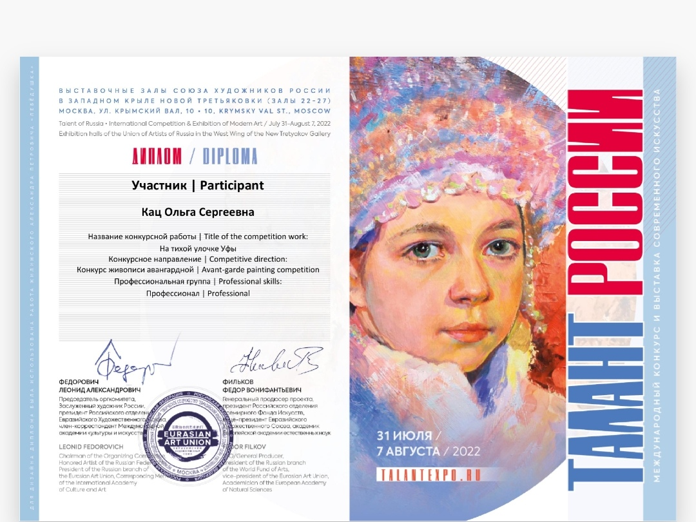

Информация о художнике
- Художник Ольга Кац родилась в 1984 году в городе Людиново Калужской области. С 2001 года проживает и работает в Санкт-Петербурге.

- Является членом Профессионального Союза Художников России с 2014 года, а также резидентом журнала "Русская галерея XXI век".


- Имеет высшее образование. Закончила Федеральное государственное бюджетное образовательное учреждение высшего образования «Высшая школа народных искусств (академия)», диплом о профессиональной переподготовке по программе «Живопись».

- Ольга Кац является участником отечественных и международных выставок, победителем художественных конкурсов живописи. Работы находятся в частных коллекциях в России и заграницей.
- Каждый художник своим творчеством пытается что-то сказать зрителю. В своих работах Ольга Кац пытается уйти от реальности и взглянуть на нее через призму своего внутреннего мира. Самое главное для нее в живописи — передать цвет и эмоции, а вместе с ними и частичку собственной души.

Выставки и публикации

Выставка в Италии, 2015.
- Международный конкурс живописи. Номинация: Пейзаж.

Выставка в Москве, 2016.
- Международный конкурс классической живописи. Номинация: Пейзаж.

- Международный многоуровневый конкурс имени де Ришелье.

- В журнале Русская галерея-XXI век / Russian gallery. XXI c., №4, 2018 была опубликована статья о творчестве художника. Текст статьи можно прочитать по ссылке тут.

- Общероссийский открытый конкурс современного искусства - "Талант России".